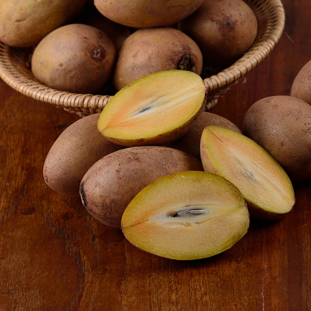

S
Sapotille
Sapotille est le fruit du sapotillier, Manilkara zapota de la famille des Sapotaceae. C'est un fruit à noyau également appelé chiku dans certains pays. En chinois, il est appelé 人心果 rénxīnguǒ, en anglais sapodilla, et en khmer ល្មុត lmout.
C'est une baie ressemblant à une pomme ovoïde de 5 à 8 cm de diamètre à la peau brune et crevassée. Sa chair jaunâtre à brun rougeâtre est succulente à maturité.
Elle se consomme fraîche ou transformée en sirop ou en confiture, voire en jus.
